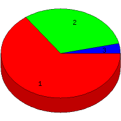

Week of 7/18/2010 to 7/24/2010: Top
3 of
3 File Types (Extensions)
Sorted by Access Count
Individual file types as determined by file extensions. All URLs that
do not contain an extension are counted as directories.

| Rank |
Type |
Accesses |
% |
Bytes |
% |
| 1 |
html
|
112 |
65.12 |
2,325,297 |
89.04 |
| 2 |
Directory (folder)
|
54 |
31.40 |
277,928 |
10.64 |
| 3 |
ico
|
6 |
3.49 |
8,436 |
0.32 |